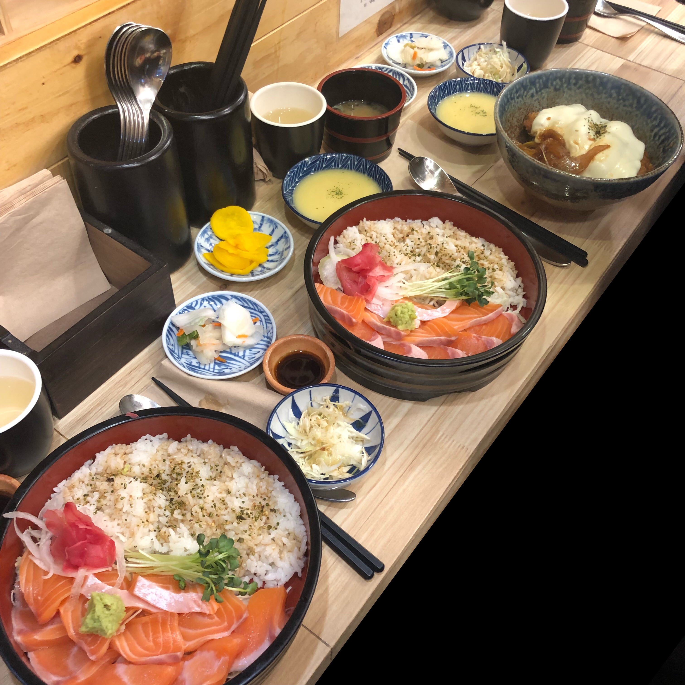

소미당

소미당은 고시촌에 있는 일본식 덮밥 가게입니다.
사케동은 9000원이며 그 외 카츠동 등이 있습니다.
가게가 작아서 대기를 서야하는 일이 잦습니다.
다른 가게들에 비해 연어가 두툼하고 많습니다.
다른 곳과 다르게 스프와 장국과 샐러드가 제공됩니다.
밥과 연어의 비율이 딱 맞아서 어느 하나 부족하지 않습니다.
단점은 다른 곳에 비해 비쌉니다.
주소 : 서울 관악구 대학6길 19
고시촌 미식회 별점:★★★★★
▲ 위 사진을 누르시면 소미당의 자세한 정보를 보실 수 있습니다.